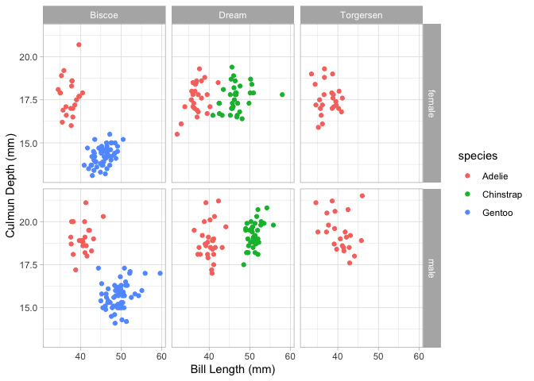

The mpipe package is designed to add to extra functionality to the “pipelining” of tidyverse style processes. When running a pipeline, it is common to break out of a pipeline to perform other actions, and then to commence a new pipeline. mpipe aims to permit a stronger use of pipelining, whilst reducing the need to break out. This piece of software is still under very active development and suggestions for improvements are welcome.
Installation
You can install the development version of mpipe from GitHub with:
The mpipe package is not currently available on CRAN.
Examples
The palmerpenguins package provides data on three species of penguins (Gentoo, Adelie and Chinstrap) over three islands (Biscoe, Dream and Torgersen). We’ll use the length and depth of their bills. A lot of the examples in this page are rather convoluted (and for many, there are other easier ways to get the same results, but they’re here to demonstrate mpipe functionality)
mutils::load_packages(dplyr, magrittr, palmerpenguins, mutils, ggplot2) penguins <- palmerpenguins::penguins %>% select(-body_mass_g,-flipper_length_mm) %>% filter_all(~!is.na(.))
fseq
A little used feature of the magrittr package’s %>% pipe is that is can be used to create functions. By using a . as the initial argument, the output will be a function and can be applied to other pieces of data. These kinds of functions are called fseq functions (short for functional sequences).
summarise_my_data <- . %>% group_by(species,island,sex) %>% summarise_all(mean,.groups="keep") summarise_my_data #> Functional sequence with the following components: #> #> 1. group_by(., species, island, sex) #> 2. summarise_all(., mean, .groups = "keep") #> #> Use 'functions' to extract the individual functions. summarise_my_data(penguins) #> # A tibble: 10 x 5 #> # Groups: species, island [5] #> species island sex bill_length_mm bill_depth_mm #> <fct> <fct> <fct> <dbl> <dbl> #> 1 Adelie Biscoe female 37.4 17.7 #> 2 Adelie Biscoe male 40.6 19.0 #> 3 Adelie Dream female 36.9 17.6 #> 4 Adelie Dream male 40.1 18.8 #> 5 Adelie Torgersen female 37.6 17.6 #> 6 Adelie Torgersen male 40.6 19.4 #> 7 Chinstrap Dream female 46.6 17.6 #> 8 Chinstrap Dream male 51.1 19.3 #> 9 Gentoo Biscoe female 45.6 14.2 #> 10 Gentoo Biscoe male 49.5 15.7
The mpipe package includes a couple of extra things that can be done to these kinds of functions, including composition of fseq by adding them together. We’ll define another fseq to filter out some penguins and variables.
filter_my_data <- . %>% filter(bill_length_mm > 43) %>% select(species,island,sex,bill_length_mm) filter_my_data #> Functional sequence with the following components: #> #> 1. filter(., bill_length_mm > 43) #> 2. select(., species, island, sex, bill_length_mm) #> #> Use 'functions' to extract the individual functions.
Then we can create the composite functional sequence
filter_my_data + summarise_my_data #> Functional sequence with the following components: #> #> 1. filter(., bill_length_mm > 43) #> 2. select(., species, island, sex, bill_length_mm) #> 3. group_by(., species, island, sex) #> 4. summarise_all(., mean, .groups = "keep") #> #> Use 'functions' to extract the individual functions.
We can either assign this to a new function name, or apply it to the data implicitly (using brackets)
(filter_my_data + summarise_my_data)(penguins) #> # A tibble: 7 x 4 #> # Groups: species, island [5] #> species island sex bill_length_mm #> <fct> <fct> <fct> <dbl> #> 1 Adelie Biscoe male 44.4 #> 2 Adelie Dream male 43.7 #> 3 Adelie Torgersen male 44.8 #> 4 Chinstrap Dream female 47.2 #> 5 Chinstrap Dream male 51.1 #> 6 Gentoo Biscoe female 46.0 #> 7 Gentoo Biscoe male 49.5
The mpipe package also includes a length() method for fseq which returns the number of elements in the functional sequence, as well as a pair of functions to check whether something is an fseq: is.fseq() and is_fseq() (depending on your own preference). More functions for using fseq to their full potential will be added in future releases.
Side Effects
A large reason for breaking out of a pipeline is to do actions such as plotting or providing feedback to the user. the mpipe package provides two functions that are particularly useful for avoiding leaving a pipeline. The way this is done is that the functions side effects are activated, but the functions return an untouched version of the data it was originally provided. This is similar to using the %T>% pipe in magrittr, but can be done with the traditional %>% pipe and is explicit in the name of the function.
-
pipe_qplot()- allows the user to createggplot2style plots usingqplot()syntax (akin to the base Rplot()syntax). This is essentially a wrapper function that also permits saving and theming of the plots. -
pipe_cat()- allows the user to output information to the console (or any other sink) in the much the same way thatcat()does. Any calls/functions will be evaluated appropriately for this output. Grouped tibbles will be parsed separately.
Here we will create a plot of Bill length against Bill depth stratified by the three grouping variables: species, sex and island. We’ll colour-code species using col = species, and facets = sex ~ island will create facets based on these two variables. We will then focus on the Biscoe island penguins (using filter()), and output the average Bill length, then stratify it by sex and species. Finally, we will return a dataset that contains the mean of Bill length and depth across these groups.
penguins %>% pipe_qplot(bill_length_mm, bill_depth_mm, col = species, xlab = "Bill Length (mm)", ylab = "Culmun Depth (mm)", theme = "light", facets = sex ~ island) %>% filter(island == "Biscoe") %>% pipe_cat("Biscoe Average Culmun Length (mm):", mean(bill_length_mm), "\n\n") %>% group_by(species,sex) %>% pipe_cat(sex, species, "Average Culmun Length (mm):", mean(bill_length_mm), "\n") %>% summarise_if(is.numeric, mean)

#> Biscoe Average Culmun Length (mm): 45.24847
#>
#> female Adelie Average Culmun Length (mm): 37.35909
#> male Adelie Average Culmun Length (mm): 40.59091
#> female Gentoo Average Culmun Length (mm): 45.56379
#> male Gentoo Average Culmun Length (mm): 49.47377
#> # A tibble: 4 x 4
#> # Groups: species [2]
#> species sex bill_length_mm bill_depth_mm
#> <fct> <fct> <dbl> <dbl>
#> 1 Adelie female 37.4 17.7
#> 2 Adelie male 40.6 19.0
#> 3 Gentoo female 45.6 14.2
#> 4 Gentoo male 49.5 15.7Control Flow
One of the key aspects of programming is being able to manipulate which lines of code are ran and when. This manipulation is called “Control Flow” (i.e. you control the flow of the processes through your code). The two main methods of this are via branches and loops. Branches force our code to make a choice, where loops allow repetition of the same lines of code.
In traditional R (as in many other languages), Branching is performed using if() or switch() statements, and can also be vectorised with functions such as if_else() and case_when(). Loops are implemented using the for(), while() and repeat() statements and can essentially be vectorised using the apply() and map() families of functions.
the mpipe package allows us to integrate this kind of control flow into a pipe by supplying different paths for data to follow based on a predicate, case or condition. Branches are implemented via the if_branch() and switch_branch() functions, and loops are implemented via the while_pipe() function.
Branches
if_branch()
The if_branch() works similar to an if statement. The function chooses whether to data should proceed down the fun branch or the elsefun branch (if supplied) depending on how predicate is evaluated.
First, we’ll define an fseq style function, and apply it to the data twice. The fseq function will first shuffle the data and then if a male penguin ends up at the top of our list, we’ll pick just the Biscoe island penguins and extract the bill length summary statistics, if a female penguin ends up on top, we’ll pick out the Biscoe & Dream island penguis and extract the bill depth summary statistics.
f <- . %>% sample_n(nrow(.)) %>% #Shuffle the data if_branch(sex[1] == "MALE", #predicate: Is the top row a male penguin? . %>% #TRUE path pipe_cat("Male penguin on top, extracting Bill Length for Biscoe penguins\n") %>% filter(island == "Biscoe") %>% pull("bill_length_mm") %>% summary(), # End of TRUE Path . %>% #FALSE path pipe_cat("Female penguin on top, extracting Bill Depth for Biscoe & Dream penguins\n") %>% filter(island != "Torgersen") %>% pull("bill_length_mm") %>% summary()) # End of FALSE Path & end of if_branch()
set.seed(1) f(penguins) #> Female penguin on top, extracting Bill Depth for Biscoe & Dream penguins #> Min. 1st Qu. Median Mean 3rd Qu. Max. #> 32.10 40.52 45.55 44.81 49.20 59.60
set.seed(2) f(penguins) #> Female penguin on top, extracting Bill Depth for Biscoe & Dream penguins #> Min. 1st Qu. Median Mean 3rd Qu. Max. #> 32.10 40.52 45.55 44.81 49.20 59.60
switch_branch()
Similarly, the switch_branch() function allows us to expand on this by following a different path depending on the evaluation of case. The case argument will be evaluated in the context of data and shoudl return either a character value or a numeric value. Characters will be matched to the other arguments provided to the switch_branch() function and numerics will be matched by position.
This time, we will do similar to the previous example except checking which island ends up on top. We can see from the below (using the table() function overloaded by the mutils package), that if Torgersen is chosen as our random island, only Adelie penguins will be in our output.
penguins %>% table(species,island) #> island #> species Biscoe Dream Torgersen #> Adelie 44 55 47 #> Chinstrap 0 68 0 #> Gentoo 119 0 0
This means we can drop this level and output only based on sex. switch_branch() will output the data untouched if case doesn’t match any of the other arguments supplied. So we will adapt our function for this:
f <- . %>% sample_n(nrow(.)) %>% pipe_cat(as.character(island[1]),"island is on top, so it will be chosen.\n") %>% filter(island == island[1]) %>% group_by(species,sex) %>% switch_branch(. %>% # What island ends up at the top row? slice(1) %>% #This time, we write case as an `fseq` as well. pull("island") %>% as.character, Torgersen = . %>% ungroup %>% pipe_cat("\t\tSpecies will be dropped.\n") %>% group_by(sex) %>% select(-species)) %>% summarise_if(is.numeric,mean)
## Force the "random" shuffle to put a "Biscoe" species is at the top set.seed(100) f(penguins) #> Biscoe island is on top, so it will be chosen. #> # A tibble: 4 x 4 #> # Groups: species [2] #> species sex bill_length_mm bill_depth_mm #> <fct> <fct> <dbl> <dbl> #> 1 Adelie female 37.4 17.7 #> 2 Adelie male 40.6 19.0 #> 3 Gentoo female 45.6 14.2 #> 4 Gentoo male 49.5 15.7
## Force the "random" shuffle to put a "Torgersen" species is at the top set.seed(1000) f(penguins) #> Torgersen island is on top, so it will be chosen. #> Species will be dropped. #> # A tibble: 2 x 3 #> sex bill_length_mm bill_depth_mm #> <fct> <dbl> <dbl> #> 1 female 37.6 17.6 #> 2 male 40.6 19.4
Loops
In terms of loops, we introduce the while_pipe() function which acts similar to a while() loop, but within a pipeline. It will repeatedly apply the fun argument to the data until cond is not TRUE. cond will be evaluated within the context of data at each iteration.
For this example, we’re simply going to shuffle until the first penguin is a female and then output the top 5 results.
penguins %>% while_pipe(sex[1] != "female", . %>% sample_n(nrow(.))) %>% slice(1:5) #> # A tibble: 5 x 5 #> species island bill_length_mm bill_depth_mm sex #> <fct> <fct> <dbl> <dbl> <fct> #> 1 Adelie Biscoe 35 17.9 female #> 2 Adelie Dream 40.9 18.9 male #> 3 Chinstrap Dream 51.3 19.9 male #> 4 Gentoo Biscoe 50.5 15.9 male #> 5 Adelie Biscoe 39 17.5 female
The while_pipe() function also provides a .counter pronoun to keep track of how many times the loop as been run. This can be used within cond and within fun and even allows for simple leves of tidy evaluation.
tibble(x = runif(5)) %>% while_pipe(.counter <= 5, . %>% mutate(!!paste0("x_",.counter) := x - x[.counter])) #> # A tibble: 5 x 6 #> x x_1 x_2 x_3 x_4 x_5 #> <dbl> <dbl> <dbl> <dbl> <dbl> <dbl> #> 1 0.0852 0 -0.578 -0.219 -0.151 -0.301 #> 2 0.663 0.578 0 0.359 0.427 0.277 #> 3 0.304 0.219 -0.359 0 0.0682 -0.0815 #> 4 0.236 0.151 -0.427 -0.0682 0 -0.150 #> 5 0.386 0.301 -0.277 0.0815 0.150 0
Code of Conduct
Please note that the mpipe project is released with a Contributor Code of Conduct. By contributing to this project, you agree to abide by its terms.
References
palmerpenguins
Gorman KB, Williams TD, Fraser WR (2014) Ecological Sexual Dimorphism and Environmental Variability within a Community of Antarctic Penguins (Genus Pygoscelis). PLoS ONE 9(3): e90081. https://doi.org/10.1371/journal.pone.0090081